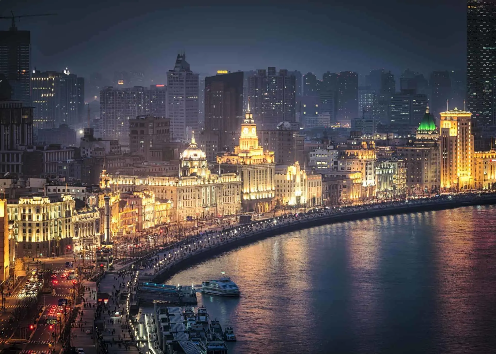

Welcome to Shanghai

Discover Shanghai, a bustling metropolis that offers a perfect blend of modern and traditional. Visit The Bund to see the contrast of colonial architecture against futuristic skyscrapers.
Travel Recommendations
- Duration: 3-5 days
- Route: Start your journey at The Bund, explore the Shanghai Museum, enjoy shopping on Nanjing Road, relax in Yu Garden, and experience the vibrant nightlife in Xintiandi.
- Must-See Attractions: Oriental Pearl Tower, Jing'an Temple, and the Shanghai Tower for panoramic city views.
- Best Time to Visit: Autumn (September to November) for mild weather and fewer crowds.